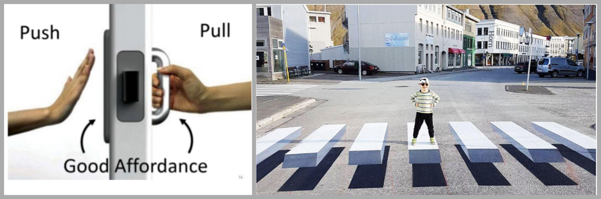

01 — Définition
Quand l'objet lui-même induit une action
La psychologie cognitive révèle une fascinante capacité du cerveau humain à
traduire les signaux sensoriels (vue, ouïe, équilibre, etc.) en actions
rapides et adaptées. Lorsque quelqu'un vous envoie une pomme, le signal
électrique émis vers la zone cérébrale responsable du mouvement vous permet
d'agir instantanément — de la rattraper en plein vol. De manière similaire,
la perception visuelle d'une tasse de thé fumante, combinée à vos
connaissances et expériences, vous guide intuitivement vers l'action
appropriée : ne pas saisir la tasse par le corps, mais par l'anse. Ce
phénomène, où l'objet lui-même induit une action, est ce que l'on appelle
une affordance.
Une affordance est définie comme la capacité d'un objet ou d'un système à
évoquer son utilisation, sa fonction. Elle provoque une interaction
spontanée entre un environnement et son utilisateur (Gibson, 1950, 1977).
Utiliser les affordances permet de rendre l'utilisation d'un objet ou
d'un service intuitive.

Figure 1. À gauche, schéma d'une porte affordante. À droite, photo d'un
passage piéton peint en 3D en Islande | Sources : atrioom.fr/blog/affordance
pour l'image de gauche ; Philippe-Viela, O. (2017). L'Islande
teste un passage piéton en 3D. 20minutes.fr.
Qui n'a jamais poussé une porte alors qu'il fallait la tirer, et
vice-versa ? Dans le premier exemple, on parle de porte affordante car
l'absence de poignée d'un côté induit l'action de pousser, et la poignée de
l'autre côté induit l'action de tirer. L'affordance permet ici de limiter
les erreurs et d'optimiser l'expérience utilisateur.
Dans le second exemple, le passage piéton 3D peut être qualifié de plus
affordant qu'un passage piéton classique en 2D. Mis en place en Islande, il
a permis de diminuer significativement la vitesse des automobilistes — sans
rehausser ni modifier physiquement la chaussée, tout en induisant le
comportement souhaité, c'est-à-dire ralentir.